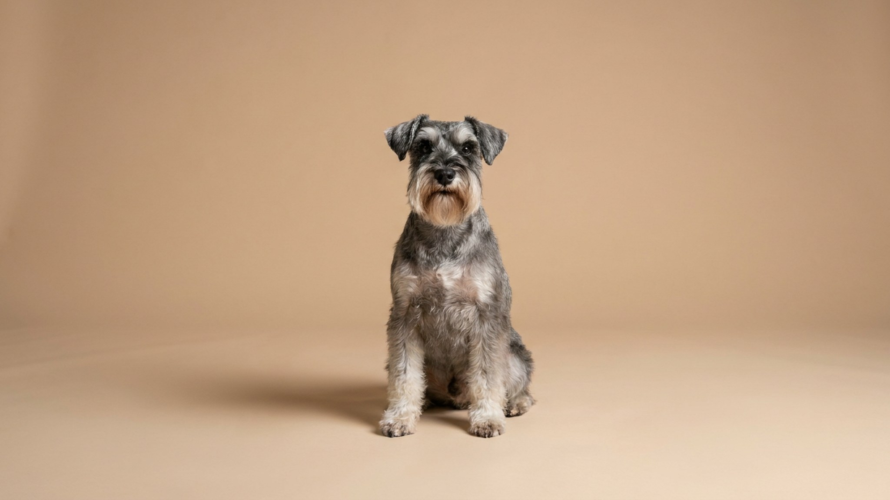

Хозяева цвергшнауцера годами не собирают шерсть с дивана — порода почти не осыпается. Но «не линяет» не значит «не требует ухода»: та же жёсткая шерсть, что не падает на пол, отмирает внутри и её нужно выщипывать. Плюс борода, которая тащит на кухню воду и еду. Разбираем, чем тримминг отличается от стрижки и что реально делать дома между визитами к грумеру.
🐾 Здоровье питомца под контролем
AI-ветеринар, дневник здоровья и персональные советы для вашего питомца — установите AnimaLife бесплатно.
У цвергшнауцера жёсткая ость и мягкий подшёрсток. Отмершие волоски не выпадают сами, а остаются в шубе — поэтому по дому шерсти почти нет, а людям, чувствительным к собачьему волосу, с породой часто легче. Полностью гипоаллергенных собак не бывает, но осыпается шнауцер минимально.
Обратная сторона: если отмерший волос не убирать, шерсть сваливается, кожа под плотной шубой хуже дышит, а характерная жёсткость и цвет теряются. Уход тут не про красоту — про кожу и комфорт собаки.
Это два разных подхода, и путать их не стоит:
Выставочных собак триммингуют. Домашнего любимца можно стричь ради удобства — просто понимая, что текстура шубы изменится. Как ухаживать за шнауцером именно в вашем случае, поможет решить грумер.
Фирменная борода и брови — это украшение и одновременно постоянная работа. Борода намокает в миске и собирает частицы еды, брови лезут в глаза, а очёсы на лапах цепляют грязь и путаются.
Профессиональный груминг — обычно раз в 5–8 недель. Между визитами хватает нескольких минут в день на бороду и лапы плюс общее расчёсывание пару раз в неделю. Приучать к рукам грумера, столу и звуку машинки лучше со щенка — взрослую собаку, не знавшую ухода, тримминговать сложнее и стрессовее. Если видите раздражение кожи или сильные колтуны у корней — это повод показать собаку ветеринару, а не разбираться самим.
🐾 Первая помощь — всегда под рукой
AnimaLife подскажет, что делать в тревожной ситуации с питомцем ещё до визита к врачу. Откройте в один тап.
🐾 Понравился разбор?
Подпишитесь на канал — каждый день разбираем по одному тревожному симптому у кошек и собак: что в пределах нормы, а когда пора к врачу. Подпишитесь, чтобы не пропустить разбор, который может спасти здоровье вашего питомца.
Цвергшнауцер — отличный выбор для тех, кто не готов к шерсти по всей квартире. Плата за чистый дом — регулярный груминг и минута на бороду после каждой миски. Знаете это заранее — и порода радует, а не удивляет.
Материал носит информационный характер и не заменяет очную консультацию ветеринара.